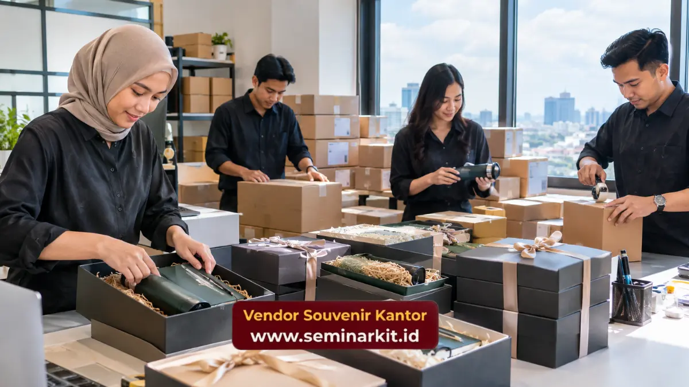

Hampers apresiasi klien Semarang dapat dibuat lebih profesional melalui kombinasi produk fungsional, packaging branded, personalisasi, dan distribusi yang disesuaikan dengan kebutuhan perusahaan.
- Hampers dapat digunakan sebagai bentuk apresiasi kepada klien dan partner bisnis.
- Isi hampers sebaiknya relevan dengan profil penerima dan konteks hubungan.
- Tumbler premium, notebook branded, alat tulis, dan produk konsumsi dapat dipadukan.
- Packaging menjadi bagian penting dari pengalaman penerima.
- vendorsouvenirkantor.web.id dapat membantu kebutuhan corporate hampers dan distribusi.
Kapan perusahaan perlu memberikan hampers apresiasi kepada klien?
Hampers apresiasi klien dapat diberikan pada akhir tahun, hari raya, setelah penyelesaian proyek, pencapaian kerja sama, atau momentum perusahaan tertentu.
Pemberian tidak harus selalu menunggu hari raya. Momen setelah sebuah proyek selesai dapat menjadi kesempatan untuk menyampaikan penghargaan terhadap kontribusi partner atau klien.
Dalam survei Business.com terhadap lebih dari 1.500 profesional, 46 persen responden menyatakan hadiah akhir tahun dari vendor membuat mereka lebih mungkin melanjutkan kerja sama. Angka tersebut menggambarkan hasil survei terhadap profesional yang diteliti dan bukan jaminan bahwa pemberian hadiah menghasilkan retensi pada semua perusahaan.
Produk apa yang cocok untuk hampers klien perusahaan?
Hampers klien perusahaan dapat menggabungkan produk konsumsi dan merchandise fungsional agar paket terasa personal sekaligus tetap relevan dengan lingkungan profesional.
Tumbler premium
Tumbler premium cocok sebagai produk utama karena dapat digunakan di kantor maupun aktivitas sehari-hari. Logo perusahaan dapat ditempatkan secara minimalis agar tidak membuat produk terlihat seperti merchandise promosi massal.
Notebook branded
Notebook dapat digunakan untuk rapat, mencatat agenda, dan aktivitas kerja. Cover berwarna netral dapat membantu menjaga tampilan profesional.
Alat tulis premium
Pulpen atau stationery dapat melengkapi hampers tanpa membutuhkan ruang besar. Produk ini cocok untuk paket yang mengutamakan fungsi.
Produk konsumsi
Produk konsumsi dapat menambahkan unsur personal pada hampers. Jenisnya dapat disesuaikan dengan kebijakan perusahaan, profil penerima, dan konteks pemberian.
Bagaimana membuat packaging hampers terlihat profesional?
Packaging hampers perlu dirancang sebagai bagian dari identitas corporate gift, bukan sekadar pembungkus produk.
Box dengan struktur kokoh dapat memberikan perlindungan sekaligus meningkatkan presentasi. Warna, sleeve, kartu ucapan, dan penempatan logo dapat mengikuti identitas visual perusahaan.
Untuk penerima strategis, kemasan yang terlalu ramai dapat mengurangi kesan profesional. Desain minimalis dengan satu atau dua elemen branding sering lebih mudah dipadukan dengan produk premium.
Bagaimana menentukan isi hampers berdasarkan profil klien?
Isi hampers sebaiknya disesuaikan dengan tingkat hubungan bisnis, karakter penerima, dan momen pemberian.
Untuk klien umum, paket sederhana dengan dua atau tiga produk dapat mencukupi. Untuk klien strategis, perusahaan dapat menggunakan hampers eksekutif dengan kombinasi produk yang lebih lengkap.
Jika penerima memiliki kebutuhan berbeda, perusahaan dapat menyiapkan beberapa varian paket. Pendekatan ini memungkinkan perusahaan menjaga identitas visual tetap konsisten tanpa membuat seluruh penerima mendapatkan isi yang benar-benar sama.
Bagaimana layanan pengiriman ke alamat klien disiapkan?
Pengiriman ke alamat klien membutuhkan data penerima yang akurat, pengemasan aman, dan koordinasi jadwal distribusi.
Untuk perusahaan yang Melayani Pemesanan Souvenir di Semarang, data penerima dapat disiapkan berdasarkan nama, nomor kontak, alamat, jumlah paket, dan catatan pengiriman. Jika terdapat banyak penerima, pembagian data berdasarkan wilayah dapat membantu proses administrasi.
Perusahaan juga dapat menggunakan sistem pengiriman langsung ke alamat klien agar tim internal tidak perlu menyimpan dan mendistribusikan semua paket secara manual.

Apa yang membuat hampers tidak terlihat seperti hadiah generik?
Hampers terlihat lebih personal ketika isi, kemasan, kartu ucapan, dan branding dirancang sebagai satu kesatuan.
Daripada memasukkan banyak barang yang tidak berkaitan, perusahaan dapat memilih beberapa produk dengan fungsi jelas. Misalnya, tumbler premium, notebook branded, dan pulpen dapat membentuk paket kerja yang konsisten.
Kartu ucapan dapat menambahkan konteks apresiasi tanpa membuat pesan terlalu panjang.
Bagaimana menghubungkan hampers lokal dengan strategi corporate gift?
Hampers apresiasi klien Semarang dapat menjadi bagian dari strategi corporate gift perusahaan yang lebih luas.
Perusahaan dapat menggunakan konsep paket utama untuk seluruh klien, kemudian menyesuaikan distribusi berdasarkan wilayah. Struktur tersebut membuat branding tetap konsisten sekaligus memudahkan pengelolaan pesanan.
Untuk kebutuhan yang lebih luas, perusahaan dapat menggunakan panduan corporate gift untuk klien strategis perusahaan sebagai referensi dalam menentukan tingkatan paket, produk, dan branding.
Konsultasikan Kebutuhan Corporate Gift
Perusahaan yang membutuhkan hampers apresiasi klien dapat menghubungi vendorsouvenirkantor.web.id untuk membahas pilihan produk, packaging branded, jumlah paket, dan kebutuhan distribusi.
Untuk kebutuhan Pengiriman ke Semarang, siapkan daftar penerima dan konsep gift agar proses pemesanan dapat disesuaikan dengan kebutuhan perusahaan.

Banner promosi: klik gambar untuk langsung terhubung ke WhatsApp tim sales.